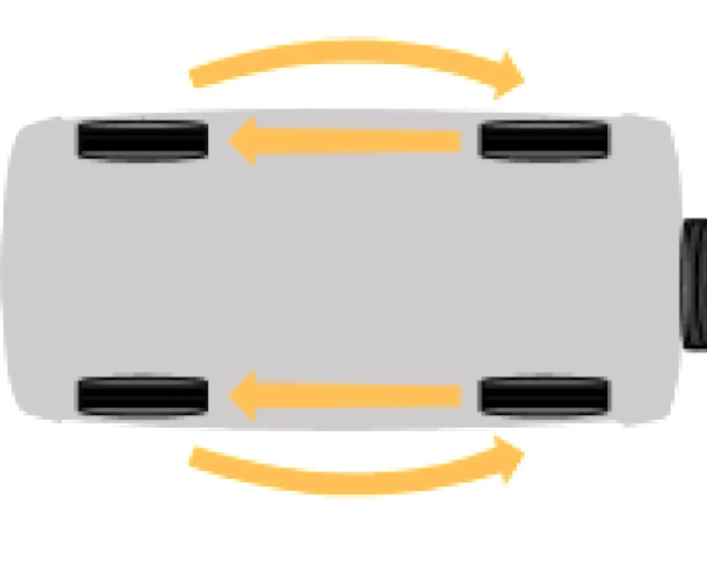

Уход за шинами
Перед каждым выездом проверяйте состояние шин. Не реже одного раза в неделю проверяйте внутреннее давление воздуха в шинах ручным манометром.
| Шина | Передние колёса, МПа | Задние колёса, МПа |
|---|---|---|
| 205/70R15 95T | 1,9 | 1,9 |
| 205/70R15 95Q M+S | 1,9 | 1,9 |
| 205/75R15 97T | 1,9 | 1,9 |
| 205/75R15 97Q M+S | 1,9 | 1,9 |
| Размерность колёс | Вылет ET, мм | Примечание |
|---|---|---|
| 6J x 15H2 | 48 | Стальное штампованное |
| 6 1/2J x 15H2 | 40 | Из алюминиевого сплава |
Если наблюдается постоянное падение давления воздуха в шине, проверьте, нет ли утечки воздуха через золотник. В случае утечки воздуха доверните золотник, а если это не поможет, замените его новым. Если давление падает при исправном золотнике, то найдите место утечки воздуха и отремонтируйте шину.
Чтобы избежать повреждения герметизирующего слоя закраины шины, демонтаж и монтаж её проводите только на шиномонтажном стенде в ремонтной мастерской. После монтажа новых шин обязательно отбалансируйте колёса.
Для обеспечения равномерного износа шин переставляйте колёса по схеме, приведённой на рисунке, с периодичностью, указанной в «Сервисной книжке».

Маркировка шин нанесена на её боковине и расшифровывается следующим образом (например, для шины 205/70R15 95Q M+S): 205 — ширина профиля шины в мм; 70 — отношение высоты шины к её ширине, выраженное в %; R — радиальное расположение нитей корда; 15 — посадочный диаметр шины в дюймах; 95 — индекс допустимой грузоподъёмности шины; Q — индекс скорости; M+S — означает, что шина предназначена в основном для снега и грязи.
На автомобиль должны устанавливаться шины одной модели, имеющие одну и ту же маркировку. При установке шин с направленным дорожным рисунком протектора, который можно определить по стрелке на их боковинах, необходимо обеспечивать совпадение направления стрелок и направления вращения колёс.
Резкие ускорения и замедления, недостаточное или повышенное давление воздуха, пренебрежение к перестановке колёс по схеме, дисбаланс, езда на повышенных скоростях по не обустроенным дорогам, неправильно установленные углы передних колёс в значительной степени сокращают срок службы шин. На изношенных шинах движение становится опасным вследствие ухудшения сцепления с дорогой. Зимой рекомендуется использование зимних шипованных или нешипованных шин.